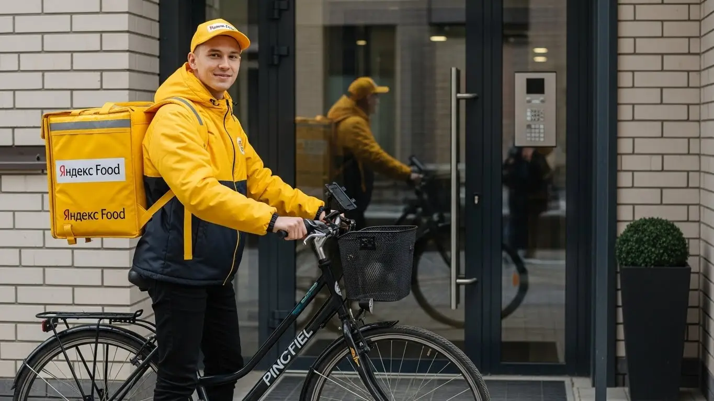
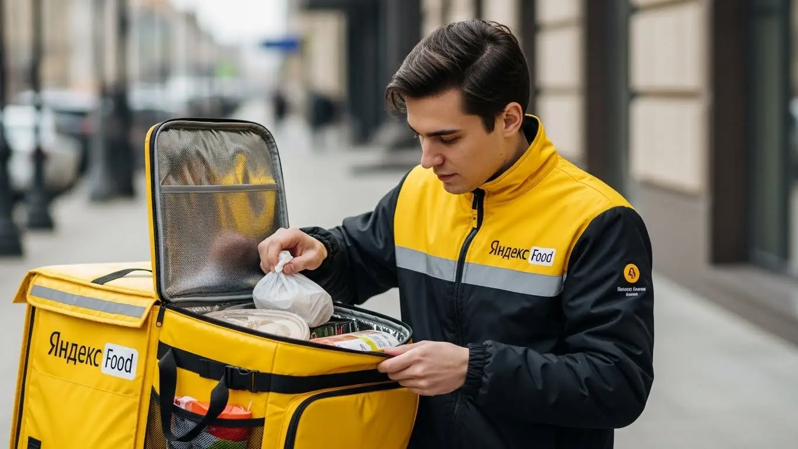
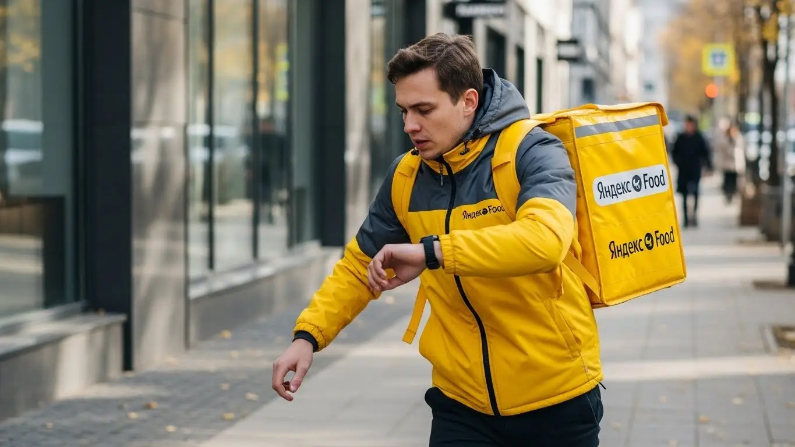
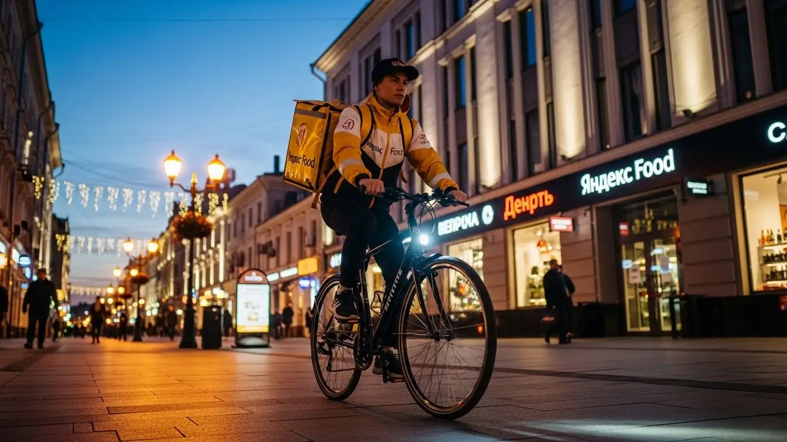

Работа курьером Яндекс Еды в Чебоксарах 2025-2026: доход и условия
- Работа курьером Яндекс Еды в Чебоксарах: для кого эта вакансия и что вы получите
- Сколько вы будете зарабатывать курьером в Чебоксарах: калькулятор дохода и разбор выплат
- Реальный заработок курьера в Чебоксарах: смены и месячный доход
- График работы и форматы занятости
- Требования к кандидату и документы
- Самозанятость, налоги и юридическая чистота
- Пошаговое оформление и первый выход на линию в Чебоксарах
- Пешком, на вело или на авто: что выгоднее в Чебоксарах
- Районы, маршруты и «топовые» зоны заказов в Чебоксарах
- Безопасность, страховка, штрафы и оплата простоя
- Плюсы и возможные минусы работы курьером в Чебоксарах
- Реальные истории и отзывы курьеров из Чебоксар
- Ответы на главные вопросы о работе курьером Яндекс Еды в Чебоксарах
- Короткие ответы на главные вопросы
- Итоги и ваш следующий шаг
Все города
Здорово, земляк. Думаешь, не покрутить ли педали или не пожечь ли бензин в доставке, но терзают смутные сомнения? Боишься, что в итоге заработаешь копейки, убьешь подвеску на наших дорогах или будешь часами стоять в пробках на Московском проспекте? Правильно делаешь, что сомневаешься. Я здесь не для того, чтобы рассказывать сказки, а чтобы дать честный расклад про работу курьером Яндекс Еды именно в Чебоксарах, без прикрас и рекламной шелухи.
Поверь, просто скачать приложение и выйти на линию — это прямой путь к разочарованию через пару недель. Без понимания «внутрянки» ты не будешь знать, почему в «Новом городе» заказов валом, а в центре можно простоять час впустую. Чтобы сразу быть в курсе всех нюансов и увидеть актуальные условия, рекомендую заглянуть на официальную страницу, где подробно описана работа курьером Яндекс Еда в Чебоксарах, там же есть и форма для быстрой анкеты. Не учтешь реальные расходы на бензин или ремонт велика, не поймешь, как налог для самозанятых съедает часть дохода и как работает система приоритета. Большинство новичков в Чебоксарах наступают на одни и те же грабли, теряя деньги и время там, где могли бы зарабатывать.
В этом гиде мы честно разберём, на чём выгоднее работать в наших условиях — пешком, на велосипеде или на авто. Посчитаем, сколько реально остается в кармане после всех расходов и налогов. Я покажу на карте самые «хлебные» районы Чебоксар в разное время суток, расскажу, как погода и праздники влияют на спрос, и объясню, за что реально можно получить штраф и как этого избежать. Никаких общих фраз — только конкретика для нашего города.
Меня зовут Алексей. Я сам откатал не одну тысячу километров по Чебоксарам с желтым рюкзаком, а сейчас у меня свой небольшой таксопарк-партнер, так что я вижу эту кухню с двух сторон. Никакой рекламной воды и обещаний «золотых гор» не будет, только мой реальный опыт и советы, которые помогут тебе сразу начать работать в плюс. Так что пристегивайся (или проверяй давление в шинах), сейчас всё разложу по полочкам.
Но сначала — короткий ликбез по главным темам, чтобы ты сразу был в курсе дел.
Что ты точно узнаешь из этого разбора
В этой статье ты ТОЧНО узнаешь:
- Сколько реально можно заработать в Чебоксарах за смену, а не в рекламе?
- В каких районах — Центре, Новоюжке или СЗР — больше всего заказов и выше оплата?
- Что выгоднее в наших условиях: работать пешком, на велосипеде или на авто?
- За что на самом деле снижают рейтинг и как это влияет на количество заказов?
- Как быстро оформить самозанятость и сколько налогов придётся платить с дохода?
- Как работает оплата простоя, если заказов вдруг стало мало?
А если тебе некогда читать всю статью — переходи сразу к заключению, где ты найдёшь короткие ответы на все эти вопросы и указания, в каких разделах искать подробности.
А вот наглядная инфографика с ключевыми цифрами по Чебоксарам.
Работа курьером в Чебоксарах: ключевые цифры
Доход в час
В пиковые часы с бонусами и в районах с высоким спросом.
Заработок за смену
Средний доход за активный 8-часовой слот в будний или выходной день.
Гибкий график
Вы сами выбираете длительность и время слотов в приложении.
Чаевые от клиентов
Приятный бонус к основному доходу, который полностью остается у вас.
Работа курьером Яндекс Еды в Чебоксарах: для кого эта вакансия и что вы получите
Эта работа — не для избранных. Она для тех, кому нужна стабильная подработка или основной доход, а также свобода вместо строгого начальника и графика с девяти до шести. В Чебоксарах курьерами успешно работают самые разные люди, и я вижу это каждый день. Если ты узнаешь себя в одном из этих пунктов, значит, тебе стоит попробовать.
Кому подойдёт эта работа в Чебоксарах
В первую очередь, это отличный вариант для студентов. Учишься ты в ЧГУ, Политехе или любом другом вузе — неважно. Можно выходить на пару часов после пар и зарабатывать себе на жизнь, не забивая на учёбу. График полностью гибкий, планируешь его сам через приложение Яндекс Про.
Также это идеальная подработка для тех, у кого уже есть основная работа. Например, ты работаешь в сменном графике 2/2. В свои выходные можешь спокойно откатать 8–10 часов и получить хорошую прибавку к зарплате. Никакого опыта не требуется — всему научат за полчаса онлайн. Главное — иметь смартфон и желание двигаться.
И, конечно, это работа для водителей, которые устали от такси или просто хотят возить заказы, а не людей. Здесь меньше стресса, понятные маршруты и стабильный поток заказов. Если тебе важны быстрые деньги — выплаты приходят на карту хоть каждый день — и возможность самому решать, когда работать, то эта вакансия для тебя.

Главные преимущества для жителей районов Северо-Западный, Новоюжный, Центр
Главный плюс работы в Чебоксарах — возможность работать прямо у себя под окнами. Тебе не нужно тратить час-полтора на дорогу до «офиса». Живёшь в Северо-Западном районе? Отлично, выбираешь эту зону в приложении Яндекс Про, выходишь из подъезда и сразу начинаешь получать заказы из кафе на Университетской или Московском проспекте.
То же самое касается и Новоюжного района. Там полно ресторанов и магазинов вдоль проспекта Трактостроителей и Эгерского бульвара. Ты можешь весь день работать в пределах своего района, который знаешь как свои пять пальцев. Это экономит и время, и деньги на проезд, и нервы. Заказы будут всегда, потому что это самые густонаселённые части города.
Даже если ты живёшь в Центре, тебе не придётся мотаться по всему городу. Вся историческая и деловая часть — одна большая зона с высоким спросом, особенно в обеденное время и по вечерам. Ты просто выходишь на линию и работаешь там, где тебе удобно.
Краткое обещание по доходу и условиям
Давай по-честному, без сказок про миллионы. В Чебоксарах курьер на автомобиле при полной занятости может стабильно зарабатывать 60 000 – 80 000 рублей в месяц, если не ленится. Если нужна подработка на несколько часов в день, то реально делать 1500–2500 рублей за смену. Деньги можно выводить на карту ежедневно, что очень удобно, когда средства нужны срочно.
Главные условия работы просты: свободный график, который ты сам составляешь в приложении Яндекс Про, и возможность начать без опыта. Тебе не нужно проходить долгих собеседований. Заполнил анкету, прошёл короткое онлайн-обучение, получил фирменный термокороб — и можно выходить на линию. Для получения выплат нужно оформить самозанятость — это обязательное требование, но делается онлайн за 15 минут. Ты сам себе начальник, и твой доход зависит только от твоего желания работать.
Сколько вы будете зарабатывать курьером в Чебоксарах: калькулятор дохода и разбор выплат
Многих новичков пугает, что зарплата не фиксированная. На самом деле, это плюс, а не минус. Твой доход — это не просто ставка за час, а гибкая система, которая позволяет зарабатывать больше, если подходить к делу с умом. Давай разберём, из чего складываются твои выплаты.
Из чего складывается доход курьера
Твой заработок в Яндекс Еде — это конструктор из нескольких частей. Во-первых, это оплата за сам заказ — фиксированная сумма за то, что ты его забрал и доставил. Во-вторых, доплата за расстояние: чем дальше ехать от ресторана до клиента, тем больше денег ты получишь. Это особенно выгодно для автокурьеров, которые берут заказы из центра в спальные районы.
Кроме того, есть повышающие коэффициенты. В приложении Яндекс Про ты увидишь зоны, подсвеченные разными цветами. Это места, где спрос на доставку сейчас самый высокий (например, в обед, вечером или в плохую погоду). Заказы из таких зон стоят дороже, иногда в 1.5-2 раза. Не стоит забывать и про бонусы за выполнение определённого числа заказов, а также чаевые от клиентов, которые полностью остаются у тебя.
И самое важное — у сервиса есть две фишки, которые защищают твой доход. Это оплата простоя, когда ты находишься на плановом слоте, но заказов временно нет, и возможная компенсация проезда на общественном транспорте для пеших курьеров на дальних маршрутах.
Как пользоваться калькулятором дохода
Чтобы прикинуть свой возможный заработок, на сайте есть специальный калькулятор. Пользоваться им просто. Сначала выбираешь свой город — Чебоксары. Затем указываешь, как планируешь доставлять заказы: как пеший курьер, на велосипеде (велокурьер) или на своем авто.
После этого выставляешь, сколько часов в день и сколько дней в неделю ты планируешь работать. Например, 4 часа в день, 5 дней в неделю. Калькулятор на основе средних данных по городу покажет тебе примерный диапазон твоего заработка за день и за месяц. Помни, что это ориентир. Твой реальный доход будет зависеть от спроса, погодных условий и твоей скорости.
Прикинь свой доход курьером в Чебоксарах
8 часов
5 дней
Примерный доход в месяц:
Это примерный расчёт. Реальный доход зависит от спроса, бонусов, чаевых и выбранного типа доставки (пеший, вело или авто). Цифры основаны на средней ставке для Чебоксар.
Этот калькулятор дает хорошую оценку, но для самых точных и актуальных условий, а также чтобы сразу заполнить анкету, загляни на страницу работа курьером Яндекс Еда в твоём городе — там всегда свежая информация и ответы на дополнительные вопросы.
Примеры расчёта для пешего, вело- и авто‑курьера в Чебоксарах
Чтобы было понятнее, вот несколько реальных сценариев для Чебоксар.
- Пеший курьер в центре. Ты выходишь на 4-часовой слот вечером в будний день. Работаешь в районе залива и улицы Карла Маркса, где много кафе. Заказы плотные, расстояния небольшие. За смену ты успеваешь сделать 8–10 доставок и зарабатываешь около 1600–2000 рублей.
- Велокурьер в Новоюжном районе. Ты работаешь в выходной день 6–7 часов. На велосипеде ты быстро передвигаешься между многоэтажками, не стоишь в пробках на Эгерском бульваре. За день спокойно делаешь 15–18 заказов и твой доход составляет 2800–3500 рублей.
- Курьер на автомобиле (автокурьер) по всему городу. Ты работаешь полную смену, 8–10 часов, в дождливую пятницу. Включаются максимальные коэффициенты. Ты берёшь заказы на доставку продуктов из гипермаркетов «Лента» или METRO, развозишь их по всему городу, от Северо-Западного района до Альгешево. За такой день можно заработать 4500–5500 рублей и даже больше.
Реальный заработок курьера в Чебоксарах: смены и месячный доход
Давай к самому главному — к деньгам. Цифры в рекламе всегда красивые, но я расскажу, сколько реально зарабатывает курьер в Чебоксарах. Зарплата в Яндекс Еде — это не фиксированная ставка, а результат твоей скорости и смекалки. Итоговый доход складывается из оплаты за каждый заказ, доплаты за километраж, бонусов за высокий спрос и, конечно, чаевых от клиентов.
В Чебоксарах нет московских сверхдоходов, но и расходы на жизнь тут другие. Главное правило везде одно: чем больше ты двигаешься и чем умнее планируешь свой день, тем выше заработок. Не стоит ждать, что деньги посыпятся с неба, как только ты взял в руки термокороб. Но если подойти к делу с головой, можно обеспечить себе достойный доход. А благодаря системе ежедневных выплат, деньги будут приходить на карту практически сразу после смены.

Диапазон дохода для подработки и полной занятости
Если тебя интересует подработка на несколько часов в день, чтобы закрыть расходы на учёбу или просто иметь карманные деньги, то цифры будут одни. Если же ты готов работать полный день, то и доход будет совершенно другим. Вот реальные условия и вилки заработка для Чебоксар, на которые можно ориентироваться.
Подработка (2–4 часа в день):
- Пеший курьер или велокурьер: За короткую смену в 2–4 часа в пиковое время (вечером или в выходные) можно заработать от 800 до 1500 рублей. В месяц это даёт 15 000 – 25 000 рублей, если выходить 4–5 раз в неделю. Отличный вариант для студентов после пар.
- Курьер на автомобиле: На машине за то же время выйдет больше, около 1200–2000 рублей, так как ты сможешь брать более дальние и дорогие заказы. Но не забывай вычитать расходы на бензин.
Полная занятость (8–10 часов в день):
- Пеший курьер или велокурьер: При полном рабочем дне доход составляет в среднем 2500–4000 рублей. За месяц активной работы можно выйти на сумму 50 000 – 75 000 рублей.
- Курьер на автомобиле: Здесь цифры самые серьёзные. В день можно делать 3500–6000 рублей. В месяц это превращается в 70 000 – 110 000 рублей «грязными», то есть до вычета расходов на топливо и обслуживание машины.
Как район, время суток и погода влияют на доход
Твой заработок напрямую зависит от трёх вещей: где, когда и в какую погоду ты работаешь. Система Яндекса умная и автоматически повышает стоимость доставки там, где заказов много, а курьеров мало. Эти зоны на карте в приложении «Яндекс Про» окрашиваются в яркие цвета — от зелёного до фиолетового. Чем ярче зона, тем выше коэффициент и твой доход.
Главные пики спроса в Чебоксарах — это обеденное время (с 12:00 до 14:00) и вечер (с 18:00 до 21:00), а также все выходные и праздничные дни. В это время люди активно заказывают через Яндекс Еду из ресторанов и продукты из Яндекс Лавки. Самые «жирные» районы — это, конечно, Центр, а также густонаселённые спальники вроде Новоюжного и Северо-Западного районов, где всегда много заказов.
Отдельная история — погода. Как только начинается дождь, снегопад или сильная жара, количество заказов взлетает, а вместе с ним и коэффициенты. Люди не хотят выходить из дома, и работа курьера становится особенно ценной. Кроме того, в плохую погоду клиенты чаще оставляют хорошие чаевые в знак благодарности. Так что не бойся непогоды — это твоё время зарабатывать больше.
Советы по увеличению заработка от опытных курьеров
Чтобы не просто работать, а именно зарабатывать, нужно использовать несколько хитростей. Со временем ты сам начнёшь чувствовать город и понимать, где и когда лучше быть, но для начала вот пара советов от меня и моих ребят.
Во-первых, изучи карту своего района. Знай, где находятся крупные торговые центры (вроде «МТВ Центра» или «Мадагаскара»), фуд-корты и популярные рестораны. Старайся находиться поближе к этим точкам в пиковые часы — так ты будешь получать заказы быстрее и тратить меньше времени на дорогу до ресторана.
Во-вторых, не брезгуй мультизаказами. Это когда приложение предлагает тебе взять сразу 2–3 заказа из одного места, которые нужно доставить по адресам неподалёку друг от друга. Да, сумка будет тяжелее, но за час ты выполнишь больше доставок и, соответственно, больше заработаешь. И, наконец, будь вежлив и опрятен. Простое «хорошего дня» часто приносит неплохие чаевые, которые за месяц складываются в ощутимую прибавку к зарплате.
***
Практический кейс: Мой знакомый, студент ЧГУ, работает на велосипеде по вечерам. Его стратегия проста: в 18:00 он выезжает в центр, в район залива, где много кафе. Выполняет 2-3 заказа там, а потом, если заказ уводит его в Северо-Западный район, он остаётся работать там, доставляя заказы из местных пиццерий и магазинов. В дождливый пятничный вечер он за 4 часа спокойно делает 1800-2000 рублей, потому что ловит высокие коэффициенты и получает хорошие чаевые.
Краткий вывод: Твой реальный заработок в Чебоксарах зависит от тебя. Чтобы получать больше, выбирай правильное время (вечера, выходные), не бойся плохой погоды и хорошо знай районы с высоким спросом. Мой совет: не гонись за одним дорогим заказом на другой конец города, лучше сделать несколько коротких доставок в «горячей» зоне — в итоге выйдет выгоднее.
График работы и форматы занятости
Одно из главных преимуществ работы курьером в Яндексе — это свободный график. Ты сам решаешь, когда и сколько тебе работать. Никаких начальников, стоящих над душой, и обязательных смен с 9 до 6. Это идеальные условия для тех, кто хочет совмещать доставку с учёбой, другим делом или просто ценит свою свободу.
Ты можешь выходить на пару часов вечером, чтобы подзаработать на ужин в кафе, или работать полный день, превратив доставку в основной источник дохода. Всё управление графиком происходит через приложение «Яндекс Про»: ты либо выбираешь заранее запланированные смены (слоты) в определённом районе, либо просто выходишь на линию в любое удобное время, когда есть желание и возможность.
Подработка после учёбы или основной работы
Формат подработки — самый популярный среди студентов и тех, у кого уже есть основная работа. Гибкий график позволяет легко встроить доставки в любое расписание. Вот пара реальных примеров, как это работает в Чебоксарах.
Пример 1: Студент. Парень учится в ЧГУ на дневном. С понедельника по пятницу он выходит на доставки с 18:00 до 22:00, работая в своём Северо-Западном районе. В субботу он может отработать более длинную смену, часов 6–8. Такой график не мешает учёбе и приносит ему около 25 000 – 30 000 рублей в месяц — это хорошая зарплата для студента, которой хватает на личные расходы.
Пример 2: Офисный сотрудник. Мужчина работает в офисе 5/2 до 18:00. Чтобы быстрее закрыть кредит за машину, он 3–4 раза в неделю после работы выходит на автодоставки на 3 часа. Плюс берёт одну смену в выходной. Это приносит ему дополнительные 20 000 – 25 000 рублей в месяц. Он не перерабатывает, но получает ощутимую прибавку к основному доходу.
Полная занятость: как выглядит типичный день курьера
Если ты рассматриваешь доставку как основную работу, твой день будет выглядеть более структурированно. Типичный день курьера на полной занятости в Чебоксарах — это не хаотичная беготня, а спланированная работа по сменам.
Обычно курьер выходит на линию около 10–11 утра. Утренние часы спокойнее, в это время часто поступают заказы из продуктовых магазинов и «Яндекс Лавки». К 12:00 начинается обеденный пик, который длится до 14:00–15:00. В это время заказы идут один за другим, особенно в центре и деловых районах.
После обеда наступает небольшое затишье. Это время опытные курьеры используют для отдыха, обеда или перемещения в другой район, где скоро начнётся вечерний пик. С 18:00 и до 21:00–22:00 — самое прибыльное время. Заказы из ресторанов и кафе разлетаются по спальным районам, таким как Новоюжный. Завершив смену, ты сразу видишь свой заработок в приложении. Система ежедневных выплат позволяет почти сразу перевести деньги на карту.
Как планировать слоты и выходы через приложение «Яндекс Про»
Приложение «Яндекс Про» — твой главный рабочий инструмент. Именно здесь ты управляешь своим графиком. Есть два основных режима: свободный выход и плановые слоты. Свободный выход — это когда ты просто нажимаешь кнопку «На линию» и начинаешь получать заказы.
Плановые слоты — это заранее забронированные смены в определённом районе и на определённое время (например, с 18:00 до 22:00 в Центре). Слоты удобны тем, что часто идут с бонусами и гарантированным минимальным доходом. То есть, даже если заказов будет мало, ты всё равно получишь оговоренную сумму. Самые выгодные слоты (вечерние, в выходные) разбирают быстро, поэтому планировать свою неделю лучше заранее.
Крайне важно не опаздывать на начало слота и не уходить с него раньше времени. За это система может снизить твой рейтинг Активности, что в будущем повлияет на количество и качество поступающих заказов. Дисциплина здесь напрямую связана с доходом.
***
Практический кейс: У меня в парке есть водитель-курьер, который сделал доставку своей основной работой. Он заранее, в начале недели, открывает расписание в «Яндекс Про» и бронирует себе слоты на 5 дней вперёд. Утром он берёт слоты в районе промышленных зон и офисов, а вечером — в густонаселённом Новоюжном районе. Такой подход обеспечивает ему стабильный поток заказов и предсказуемый доход, который редко опускается ниже 4500 рублей за смену.
Краткий вывод: Гибкость графика — это твой главный козырь. Используй приложение «Яндекс Про» для планирования, чтобы максимизировать свой доход. Если нужна подработка — выходи в пиковые часы. Если это основная работа — бронируй плановые слоты заранее, чтобы обеспечить себе стабильность и бонусы.
Требования к кандидату и документы
Многих пугает, что для работы курьером нужны особые навыки или кипа бумаг. На деле всё гораздо проще. Условия работы специально сделаны так, чтобы любой адекватный человек мог быстро начать работать без опыта и высшего образования. Главное — быть ответственным и иметь желание зарабатывать. Давай по порядку разберём, какие требования к тебе предъявляются.
Возраст, гражданство и базовые условия
Начнём с основ. Чтобы стать курьером-партнёром Яндекс Еды, тебе должно быть полных 18 лет. Это строгое правило, связанное с юридическими аспектами оформления самозанятости и материальной ответственностью. Никаких исключений здесь нет.
По гражданству условия тоже чёткие: принимают граждан Российской Федерации, а также граждан стран ЕАЭС — это Беларусь, Казахстан, Армения и Киргизия. Разумеется, у тебя должны быть все необходимые документы, подтверждающие легальное пребывание и право на работу в России.
Из других базовых требований — смартфон на базе Android, так как всё управление заказами идёт через приложение «Яндекс Про». И конечно, ты должен быть в нормальной физической форме, чтобы без проблем передвигаться по городу, будь то в роли пешего курьера в центре Чебоксар или велокурьера в спальных районах.
Какие документы нужны для работы курьером
Список документов минимальный, и скорее всего, всё необходимое у тебя уже есть под рукой. Не нужно собирать справки месяцами. Вот что понадобится для оформления:
- Паспорт. Основной документ, удостоверяющий твою личность. Для граждан РФ — внутренний паспорт, для граждан ЕАЭС — национальный паспорт и документы, подтверждающие право на работу в России.
- ИНН (Идентификационный номер налогоплательщика). Он нужен для регистрации в качестве самозанятого. Если ты не помнишь свой номер, его можно за пару минут бесплатно узнать на сайте ФНС.
- Банковская карта. Нужна именная карта любого российского банка, оформленная на тебя. На неё будут приходить выплаты — твои заработанные деньги. Карта родственников или друзей не подойдёт.
- Медицинская книжка. Так как ты будешь доставлять продукты питания, медкнижка обязательна. Если её нет, придётся оформить. В Чебоксарах это можно сделать в любой поликлинике, имеющей лицензию. Советую заняться этим заранее, чтобы не терять время.
Подготовь эти документы, и процесс подключения к сервису займёт минимум времени.
Можно ли работать с 16 лет и какие есть альтернативы
Частый вопрос от молодых ребят: берут ли в Яндекс Еду с 16 или 17 лет? Отвечаю честно: нет, не берут. Как я уже сказал, минимальный возраст для сотрудничества — 18 лет. Это связано с форматом работы через самозанятость, который предполагает полную дееспособность и личную ответственность перед налоговой и заказчиком.
Какие есть варианты для подростков в Чебоксарах, которые хотят подработать? Можно рассмотреть вакансии промоутера, расклейщика объявлений или помощника в небольших местных кафе, где возможно официальное трудоустройство по ТК РФ с согласия родителей. Да, это может быть не так удобно и выгодно, как работа курьером со свободным графиком, но это легальные способы заработать свои первые деньги до совершеннолетия.
***
Из практики: ко мне как-то пришёл устраиваться парень, студент ЧГУ, 19 лет. Думал, что оформление — это долгая бюрократия. Мы с ним сели, проверили документы. Паспорт, ИНН, карта — всё на месте. А вот медкнижки не было. Я ему посоветовал не тянуть и сразу пойти в клинику на проспекте Ленина. Он сделал всё за три дня, после чего мы его быстро подключили. Через неделю он уже уверенно работал в центре и закрывал по 15-20 заказов за смену. Его главный вывод был: «Надо было сразу медкнижкой заняться, а не ждать».
В общем, условия и требования к кандидатам простые и понятные. Никаких подводных камней тут нет, всё по закону. Главный совет: перед заполнением анкеты убедись, что все документы в порядке, особенно медицинская книжка, если планируешь доставлять еду. Это сэкономит тебе несколько дней.
Самозанятость, налоги и юридическая чистота
Многих отпугивает слово «самозанятость». Кажется, что это сложно, связано с налогами, отчётами и прочей головной болью. На самом деле, это самый простой и прозрачный способ работать на себя и получать официальный доход. Вся система создана так, чтобы ты тратил на это минимум времени и мог сосредоточиться на главном — на заработке.
Почему курьеры Яндекс Еды работают как самозанятые
Формат самозанятости (или налог на профессиональный доход, НПД) — это специальный налоговый режим для тех, кто работает на себя. Яндекс Еда сотрудничает с курьерами именно как с партнёрами, а не как с наёмными сотрудниками по трудовому договору. Это даёт главное преимущество — свободу. Ты сам решаешь, когда и сколько работать, у тебя нет начальника и жёсткого графика.
Работая как самозанятый, ты получаешь полностью «белый» доход. Это значит, что ты можешь, например, взять кредит в банке или получить визу, подтвердив свои заработки официальной справкой. При этом никакой сложной бухгалтерии: все чеки формируются автоматически, а налог рассчитывается сам в приложении. Это легально, безопасно и гораздо проще, чем работать через «серые» схемы или получать деньги в конверте.
Как за 10 минут оформить самозанятость через «Мой налог»
Регистрация статуса самозанятого занимает не больше 10 минут и делается прямо с телефона. Никуда ходить не нужно. Вот простая пошаговая инструкция:
- Скачай приложение. Зайди в Google Play и скачай официальное приложение ФНС «Мой налог».
- Начни регистрацию. Открой приложение и выбери способ регистрации «По паспорту РФ».
- Отсканируй паспорт. Наведи камеру телефона на главный разворот паспорта. Приложение само распознает все данные. Проверь, чтобы всё было верно.
- Сделай селфи. Приложение попросит сделать фото, чтобы подтвердить твою личность. Это быстрая и стандартная процедура.
- Подтверди регистрацию. Выбери свой регион — Чувашская Республика. После этого подтверди отправку заявления. Через несколько минут тебе придёт уведомление, что ты зарегистрирован как плательщик НПД.
Вот и всё. Ты официально стал самозанятым. Весь процесс интуитивно понятен и не требует специальных знаний. Если возникнут трудности, служба поддержки партнёра, через которого ты подключаешься, всегда поможет.
Сколько и как платить налоги
Теперь о самом важном — о деньгах. Ставка налога для самозанятых — одна из самых низких в стране. Ты платишь 6% с доходов, полученных от юридических лиц (в нашем случае — от Яндекса). Никаких других скрытых сборов, страховых взносов или комиссий в пользу государства нет.
Процесс оплаты налога тоже максимально автоматизирован. Тебе не нужно ничего считать вручную. Яндекс сам передаёт данные о твоих выплатах в налоговую. В начале каждого месяца в приложении «Мой налог» ты увидишь итоговую сумму налога за предыдущий месяц. Оплатить его нужно до 28 числа. Сделать это можно прямо в приложении, привязав банковскую карту. Это проще, чем заплатить за мобильную связь. Работая официально, ты спишь спокойно и не боишься никаких проверок.
***
У меня в парке есть водитель-курьер, мужчина лет 35, назовём его Сергей. Раньше он работал на стройках в Чебоксарах, получал наличкой, постоянно дёргался. Когда решил пойти в доставку, больше всего боялся этой самой «самозанятости». Думал, что это обман. Я ему лично показал на своём телефоне, как это работает. Он зарегистрировался за 5 минут. В первый месяц заработал около 50 000 рублей, работая в основном по Новочебоксарску и Новоюжному району. Когда пришла квитанция на налог в 3000 рублей, он оплатил её с карты и сказал, что впервые почувствовал себя защищённым. Теперь он спокойно работает и не переживает за легальность своего дохода.
Подводя итог: не стоит бояться статуса самозанятого. Это современный и удобный инструмент, который даёт легальный статус, официальный доход и минимальную налоговую нагрузку. Весь процесс, от регистрации до уплаты налога, сделан максимально просто и понятно для любого человека.
Пошаговое оформление и первый выход на линию в Чебоксарах
Многие думают, что устроиться курьером — это долго и муторно, с кучей бумажек и собеседований. На деле всё гораздо проще, а весь процесс от анкеты до первого заработка в Чебоксарах можно пройти за один день, даже без опыта. Главное — следовать простым шагам, и уже сегодня вечером ты сможешь получить первые выплаты на карту.
Шаг 1–2: анкета и онлайн‑обучение
Первым делом нужно заполнить анкету на сайте. Требования минимальны: ФИО, дата рождения, номер телефона, город — стандартный набор. Указывай реальные данные, потому что их будут проверять. После отправки анкеты система проверит информацию, обычно это занимает от 15 минут до пары часов. Не нужно никуда ехать или звонить, всё происходит автоматически.
Как только твои данные подтвердят, на телефон придёт ссылка на короткое онлайн‑обучение. Это не лекции в университете, а несколько простых видеороликов и инструкций. Тебе расскажут, как пользоваться приложением «Яндекс Про», как правильно общаться с клиентами и представителями ресторанов, что делать в нестандартных ситуациях. В конце будет небольшой тест из нескольких вопросов, чтобы убедиться, что ты всё понял. Пройти его несложно, если смотрел внимательно.
Шаг 3: получение сумки и доступа к заказам в Чебоксарах
После успешного прохождения теста остаётся последний шаг — получить экипировку. Главное — это фирменный термокороб. Без него к заказам «Яндекс Еды» не подключат, так как важно сохранять температуру блюд. В Чебоксарах сумку можно получить несколькими способами: в офисе партнёра сервиса или в специальных пунктах выдачи. Иногда доступна даже доставка экипировки на дом.
Точные адреса и часы работы этих точек появятся у тебя в приложении «Яндекс Про» после завершения обучения. Просто выбираешь ближайший и удобный для тебя вариант. Как только ты заберёшь термокороб и активируешь его в приложении, тебе откроется полный доступ к заказам. С этого момента ты — полноценный курьер и можешь начинать зарабатывать.
Шаг 4: первый слот и первый доход
Теперь всё в твоих руках. Открывай «Яндекс Про», смотри на карту Чебоксар и выбирай свой первый слот. Слот — это запланированный отрезок времени, в течение которого ты будешь выполнять заказы, например, с 18:00 до 22:00. Для начала советую выбрать район, который ты хорошо знаешь. Живёшь в Новоюжке — начинай там, ориентироваться будет проще, и стресса меньше.
Выбираешь на карте зону, нажимаешь кнопку «Начать слот» и ждёшь первый заказ. Приложение само построит маршрут до ресторана, а потом до клиента. Твоя задача — аккуратно и вовремя доставить посылку. Деньги за выполненные заказы начнут поступать на твой баланс сразу же — у многих партнёров есть ежедневные выплаты. Так что, если ты начал оформление утром, к вечеру уже можешь не только окупить проезд, но и увидеть на карте первый реальный доход.
Вот реальный пример. Мой знакомый студент из Северо-Западного района решил попробовать эту подработку. Он заполнил анкету в 10 утра, пока была «форточка» между парами. К обеду уже прошёл обучение и тест. После учёбы съездил в офис партнёра, забрал сумку, и в 19:00 вышел на свой первый 3-часовой слот в знакомом районе. За вечер выполнил 5 заказов и заработал около 800 рублей чистыми. Говорит, сам не ожидал, что всё так быстро получится.
В общем, процесс отлажен до мелочей. Никакой бюрократии и долгих ожиданий — идеальный вариант для тех, кто ищет подработку со свободным графиком. Главное — твоё желание. Мой совет: не откладывай на завтра. Заполни анкету, пройди обучение и попробуй выйти на линию в знакомом районе. Первые деньги всегда мотивируют лучше всего.
Пешком, на вело или на авто: что выгоднее в Чебоксарах
Выбор транспорта — одно из ключевых решений, которое напрямую влияет на твой доход и комфорт работы. В Чебоксарах у каждого формата есть свои плюсы и зоны, где он показывает себя лучше всего. Нет универсального ответа, что лучше, — всё зависит от твоих целей, физической формы и того, где ты планируешь работать. Давай разберёмся по порядку.

Пеший курьер: для центра и плотной застройки в Чебоксарах
Если у тебя нет машины или велосипеда, пешая доставка — отличный старт. Этот формат идеален для центральной части города. В районе Президентского бульвара, улицы Карла Маркса, Ленинградской и на заливе сосредоточено огромное количество кафе и ресторанов. Заказов здесь всегда много, а расстояния между точками А и Б часто небольшие, буквально 500–700 метров. На машине тут только в пробках стоять, а пешком ты быстро срежешь путь через дворы или по пешеходной зоне.
Пеший курьер не зависит от пробок, не тратится на бензин и обслуживание транспорта. По сути, твои расходы — это удобная обувь и оплата проезда, если берёшь заказы далеко от дома. Конечно, многокилометровые заказы тебе давать не будут, система подбирает их с учётом твоего формата. Это хороший вариант для подработки на несколько часов в день и, можно сказать, бесплатный фитнес.
Велокурьер: быстрые доставки между спальными районами
Велосипед — это золотая середина. Ты уже не так ограничен расстоянием, как пеший курьер, но всё ещё не зависишь от пробок, как водитель. Для Чебоксар с их большими спальными районами это очень выгодный вариант. Например, в Северо-Западном районе или в Новоюжном районе (Новоюжке) на велосипеде работать одно удовольствие. Здесь много жилых домов, а значит, и много заказов на дом, при этом расстояния могут быть 2–4 километра — пешком уже долго, а на машине не всегда удобно парковаться у подъездов.
Велокурьер мобильнее, быстрее и за смену может выполнить значительно больше заказов, чем пеший. Плюс это реальная экономия на транспорте и поддержание себя в хорошей физической форме. Если у тебя есть свой велосипед, считай, ты уже готов к работе. Главное — позаботиться о безопасности: шлем, фонари и светоотражающие элементы вечером обязательны.
Водитель‑курьер: заказы по всему городу и пригороду Новочебоксарска и Кугеси
Работа на автомобиле открывает максимум возможностей и даёт самый высокий потенциальный доход. Водитель-курьер может брать абсолютно любые заказы: от доставки пиццы из центра до перевозки больших продуктовых закупок из гипермаркета. Ты не ограничен ни расстоянием, ни весом заказа. Особенно выгодно работать на авто в плохую погоду — дождь, снег, мороз. В это время количество заказов резко растёт, коэффициенты повышаются, а пеших и велокурьеров на линии становится меньше.
На машине ты можешь эффективно работать по всему городу, выполняя дальние заказы между районами, например, из центра в Юго-Западный. А главное — тебе доступны заказы в пригород, такие как Новочебоксарск или Кугеси, которые всегда оплачиваются очень хорошо. Да, есть расходы на бензин и амортизацию, но при грамотном подходе они с лихвой перекрываются высоким доходом, особенно если работать в часы пик и выходные дни.
У меня есть знакомый водитель-курьер, который сделал эту работу основной. Он выходит на линию к обеденному пику, работает в центре. После 15:00, когда спрос в центре падает, он смещается в спальные районы. А вечером, особенно в пятницу и субботу, целенаправленно берёт дорогие заказы в Новочебоксарск. За 8-10 часов такой работы в хороший день он привозит домой 4000–5000 рублей чистыми, уже за вычетом бензина.
Сравнение форматов доставки в Чебоксарах
| Параметр | Пеший курьер | Велокурьер | Водитель-курьер |
|---|---|---|---|
| Средний доход в час | 250–400 ₽ | 350–550 ₽ | 500–800 ₽ |
| Радиус доставки | До 2-3 км | До 5-7 км | Весь город и пригород |
| Плюсы | Нет расходов на транспорт, фитнес, идеален для центра | Скорость, маневренность, экономия, «оплачиваемый фитнес» | Высокий доход, комфорт, большие и дальние заказы, работа в любую погоду |
| Минусы / Расходы | Физическая нагрузка, зависимость от погоды, маленький радиус | Нужен велосипед, усталость, сезонность | Расходы на бензин и амортизацию, пробки, поиск парковки |
| Лучшие районы в Чебоксарах | Центр (ул. К. Маркса, Президентский бульвар, Залив) | Северо-Западный, Новоюжный, Центр | Все районы города, пригороды (Новочебоксарск, Кугеси) |
В итоге, выбор за тобой. Для старта и подработки в центре отлично подойдёт пеший формат. Если есть велосипед и желание двигаться — смело выбирай его, особенно для работы в спальниках. А если нацелен на максимальный заработок и готов работать по всему городу — автомобиль твой лучший инструмент. Главное, что начать можно без опыта — просто выбери то, что тебе доступно прямо сейчас, а дальше посмотришь по ситуации. Сменить формат в приложении можно в любой момент.
Районы, маршруты и «топовые» зоны заказов в Чебоксарах
Чтобы в Чебоксарах не просто кататься, а именно зарабатывать, нужно понимать, где и когда скапливаются заказы. Город не такой большой, как Москва, но свои «рыбные места» есть, и знание карты спроса в «Яндекс Про» — твой главный инструмент. Бездумно гоняться за фиолетовыми зонами по всему городу — верный способ сжечь топливо и время.
Где больше всего заказов: ТРЦ, бизнес-центры и туристические места
Самый стабильный поток заказов, конечно, в местах, где много людей и заведений. В первую очередь это крупные торговые центры. Обрати внимание на ТРЦ «Мадагаскар» на Ленинского Комсомола и «МТВ Центр» на проспекте Ивана Яковлева. У них огромные фуд-корты, рестораны и магазины, которые генерируют доставку с утра до позднего вечера. В обеденное время (с 12:00 до 15:00) и по вечерам (с 18:00 до 21:00) здесь всегда повышенный спрос и, как следствие, хорошие коэффициенты.
Деловой центр города — ещё одна золотая жила. Это район вокруг Президентского бульвара, улицы Карла Маркса и площади Республики. Днём отсюда летят заказы на обеды в офисы, а вечером — доставка продуктов и готовой еды по домам сотрудников. Летом и в выходные добавляются туристические зоны: Чебоксарский залив и Красная площадь. Люди гуляют, заказывают пиццу, напитки прямо на набережную. Пешему курьеру или велокурьеру здесь работать одно удовольствие — короткие дистанции и много заказов.
Работа в своём районе: примеры для популярных жилых кварталов
Многие новички думают, что все деньги крутятся только в центре, и это ошибка. Отличный доход можно получать, практически не выезжая из своего района. Возьмём, к примеру, Северо-Западный район. Здесь полно жилых комплексов, а значит, и клиентов. Вечерами и в выходные люди массово заказывают ужины из местных кафе и продукты из «Пятёрочек» и «Магнитов». Работая здесь, ты экономишь время и бензин на поездках в центр и обратно.
То же самое касается и Новоюжного района. Это огромный спальный массив, где спрос на доставку стабильно высокий. Здесь много семей с детьми, которые часто заказывают еду на дом. Если ты живёшь в «Новоюжке», можешь смело планировать слоты на вечернее время — без работы не останешься. Главное — хорошо знать свой микрорайон, все дворы и короткие пути, чтобы доставлять заказы быстрее.
Как выбирать зоны и слоты в «Яндекс Про», чтобы не мотаться впустую
Приложение «Яндекс Про» — твой командный центр. Главное, на что нужно смотреть, — это карта спроса. Зоны, окрашенные в фиолетовый цвет, означают, что заказов там сейчас больше, чем свободных курьеров, и действует повышающий коэффициент. Но не стоит сломя голову нестись через весь город за «+200 рублей» к заказу. Пока доедешь, спрос может упасть.
Умная стратегия выглядит так: заранее планируй слоты в тех зонах, где ты ожидаешь пик. Например, если хочешь поработать в обед, выбирай слот в центре. Если планируешь вечернюю подработку — бери свой спальный район. Смотри на карту и двигайся в сторону ближайшей «горячей» зоны, но не делай это самоцелью. Часто выгоднее выполнить два-три заказа подряд в спокойном районе, чем потратить 40 минут на дорогу до зоны с высоким коэффициентом и успеть сделать там всего один заказ.
Из практики: у меня был парень-велокурьер, который поначалу пытался работать только в центре. Мотался туда-сюда из Новоюжного района, уставал, а зарабатывал средне. Я ему посоветовал попробовать кататься строго по своему району в вечерние слоты с 19:00 до 22:00. В итоге он стал делать больше заказов в час, потому что идеально знал местность и тратил минимум времени на дорогу. Его средний доход за смену вырос примерно на 20-25%, а уставать он стал меньше.
В общем, ключ к хорошему доходу в Чебоксарах — это баланс. Изучай карту, но не забывай про логику и здравый смысл. Иногда стабильная работа в знакомом районе приносит больше, чем погоня за сиюминутными бонусами. Мой совет: начни со своего района, изучи его, а потом уже аккуратно пробуй выезжать в центр в пиковые часы.
Безопасность, страховка, штрафы и оплата простоя
Работа курьером — это не только деньги и свободный график, но и определённые риски. Ты постоянно в движении, на дороге, общаешься с разными людьми. Поэтому важно знать, как ты защищён, какие правила нужно соблюдать, чтобы не нарваться на неприятности, и какие гарантии даёт сервис.

Бесплатная страховка на сменах и что она покрывает
Самое важное, что нужно знать: как только ты выходишь на запланированный слот, твоя жизнь и здоровье застрахованы. Это бесплатно, сервис всё делает сам. Страховка покрывает несчастные случаи, которые могут произойти во время доставки. Например, если ты, будучи на велосипеде, упал и получил травму, или, не дай бог, попал в ДТП на машине, страховка поможет компенсировать расходы на лечение.
Сумма покрытия доходит до 2 миллионов рублей — это серьёзная поддержка. Конечно, никто не хочет, чтобы страховой случай наступил, но само наличие такой защиты даёт уверенность. Ты понимаешь, что в сложной ситуации не останешься один на один с проблемой. Главное — если что-то случилось, сразу же сообщить в службу поддержки через «Яндекс Про». Они подскажут, что делать дальше.
Правила безопасности на дороге и при доставке
Банальные вещи, но именно они спасают от большинства проблем. Если ты пеший курьер, всегда переходи дорогу по «зебре», в тёмное время суток носи светоотражающие элементы. Для велокурьеров — шлем и фонари обязательны, не летай по тротуарам, как сумасшедший, уважай пешеходов. Если ты курьер на автомобиле, не отвлекайся на телефон во время движения, используй держатель. Паркуйся так, чтобы никому не мешать, даже если торопишься.
Отдельно скажу про плохую погоду. В дождь или гололёд лучше не гнать. Доставь заказ на 5 минут позже, но в целости и сохранности. С заказами тоже аккуратнее: супы и напитки ставь ровно, пиццу не переворачивай. И ещё момент про деньги: если заказ с оплатой наличными, всегда проверяй купюры и готовь сдачу заранее. Простые правила, но они сохранят твои нервы и рейтинг.
Какие бывают штрафы и как их избежать
В Яндекс Еде нет системы штрафов в привычном понимании, как на заводе. Никто не будет вычитать у тебя из зарплаты за мелкий проступок. Но есть система приоритета и рейтинг. Если ты систематически нарушаешь правила, твой рейтинг падает, и ты получаешь меньше заказов. В крайних случаях возможна временная или постоянная блокировка доступа к сервису.
За что могут понизить рейтинг? За грубость клиенту или сотруднику ресторана, за регулярные опоздания на точки, за повреждённый заказ по твоей вине или за отмену уже принятого заказа без веской причины. Как этого избежать? Элементарно. Будь вежлив, используй термокороб, чтобы еда не остыла, следи за временем и, если понимаешь, что опаздываешь из-за пробки, предупреди поддержку. Человеческий фактор все понимают, главное — не игнорировать правила и быть на связи.
Что такое оплата простоя и как она защищает ваш доход
Это одна из ключевых фишек, которая выгодно отличает работу в Яндекс Еде. Оплата простоя — это твоя финансовая подушка безопасности. Она работает на плановых слотах. Если в течение часа ты находишься в указанной зоне, готов принимать заказы, но их по какой-то причине нет или очень мало, сервис всё равно начислит тебе минимальную гарантированную сумму за этот час.
Например, гарантия в определённой зоне составляет 250 рублей в час. Ты за этот час выполнил один короткий заказ на 150 рублей. Система автоматически добавит тебе ещё 100 рублей, чтобы в итоге за час ты получил гарантированный минимум. Это защищает тебя от ситуаций, когда ты вышел на смену, а город «умер» и заказов нет. Ты не тратишь своё время впустую.
Был случай у одного из моих водителей-курьеров. Он взял утренний слот в будний день в спальном районе. Спрос был низкий, за два часа прилетело всего три заказа. Но благодаря оплате простоя он получил не копейки за эти три заказа, а гарантированную минимальную ставку за два часа работы. Это позволило ему спокойно отработать слот, не нервничая и не сжигая бензин в поисках заказов.
Итак, безопасность и правила — это не способ тебя наказать, а система, которая защищает и тебя, и клиента, и сервис. Знай про страховку, соблюдай ПДД и стандарты сервиса, и тогда твоя работа будет стабильной и предсказуемой. Мой совет: в любой непонятной ситуации — от ДТП до конфликта с клиентом — не пытайся решить всё сам, сразу пиши в поддержку. Они для того и существуют, чтобы помогать.
Плюсы и возможные минусы работы курьером в Чебоксарах
Сильные стороны работы курьером в Чебоксарах
Давай по-честному, без рекламной шелухи. Главный плюс, за который все и держатся в этой работе, — это свобода. Ты сам себе начальник: решаешь, когда выходить на линию, сколько часов работать и когда сделать выходной. Нет нужды отпрашиваться, если нужно в поликлинику или по делам. Деньги приходят на карту каждый день — это те самые ежедневные выплаты, которые очень выручают, когда нужно быстро закрыть финансовый вопрос.
Второй важный момент — работаешь там, где тебе удобно. Живёшь в Новоюжном районе — можешь брать заказы там, не тратя время и деньги на дорогу через весь город в центр. Система подбирает заказы рядом с тобой.
Плюс, ты не один на один с проблемами: есть круглосуточная поддержка, которая поможет в сложной ситуации, и бесплатная страховка на время смены. И последнее — всё официально. Ты работаешь как самозанятый, платишь небольшой налог, и у тебя идёт официальный доход, который можно подтвердить, например, для банка.
С какими сложностями чаще всего сталкиваются курьеры
Идеальной работы не бывает, и здесь есть свои заморочки. Во-первых, это физическая нагрузка. Если ты пеший или велокурьер, будь готов много ходить или крутить педали, особенно с учётом холмистого рельефа Чебоксар. Во-вторых, погода. Осенью льют дожди, зимой — снег и гололёд. Работать в таких условиях — то ещё испытание. Мой совет: не экономь на хорошей непромокаемой одежде и обуви, это твоё здоровье и комфорт.
Третий момент — возможные простои. Бывают часы, особенно днём в будни, когда заказов мало. Сидишь и ждёшь. Тут важно не психовать, а использовать это время с умом: перекусить, отдохнуть или переместиться в зону, где спрос выше — приложение «Яндекс Про» такие зоны подсвечивает.
Ну и, конечно, клиенты. Большинство — адекватные люди, но иногда попадаются и сложные персонажи. Главное правило — сохранять спокойствие, быть вежливым и в случае конфликта сразу писать в поддержку. Они помогут разрулить ситуацию.
Кому такая работа подходит, а кому лучше поискать другой формат
Эта подработка идеально подходит для тех, кто ценит гибкость и не любит сидеть на одном месте. Если ты студент, которому нужен дополнительный доход после пар, или у тебя есть основная работа со сменным графиком — это твой вариант. Также она хороша для активных людей, которые хотят совмещать заработок с физической нагрузкой. Если ты самостоятельный, умеешь сам планировать своё время и не боишься мелких трудностей — у тебя всё получится.
С другой стороны, если ты ищешь максимальной стабильности, предсказуемости и тёплого офиса, работа в доставке может разочаровать. Она не подойдёт тем, кто не любит физическую активность или плохо переносит капризы погоды. Если общение с незнакомыми людьми для тебя — стресс, а любая непредвиденная ситуация выбивает из колеи, лучше поискать что-то другое, например, удалённую работу за компьютером. Тут нужно быть немного авантюристом.
***
Практический кейс: У меня был парень, водитель-курьер, который поначалу брал только короткие смены по 4 часа днём. Жаловался, что заработок маленький. Я ему посоветовал попробовать выходить в «красные зоны» — в пятницу вечером и на выходных, когда коэффициенты максимальные. Он стал работать по маршруту Центр — Северо-Западный район, развозя заказы из ресторанов на заливе. В итоге за те же 4 часа в пятницу он стал зарабатывать почти вдвое больше, чем за 6 часов во вторник днём.
***
Краткий вывод: Работа курьером в Чебоксарах даёт свободу, ежедневные выплаты и возможность работать рядом с домом. Но взамен требует физической выносливости, готовности к плохой погоде и умения общаться с людьми. Мой совет: прежде чем начинать, честно оцени свои силы и приоритеты. Если гибкость для тебя важнее офисного комфорта — смело пробуй.
Реальные истории и отзывы курьеров из Чебоксар
История студента ЧГУ, который совмещает учёбу и доставку
«Меня зовут Кирилл, я учусь на третьем курсе в ЧГУ. Живу в общаге в Северо-Западном районе, и подработка велокурьером в Яндекс Еде стала для меня спасением. График строю сам: после пар, примерно с 17:00 до 21:00, выхожу на линию. В основном катаюсь по своему же району и по Московскому проспекту — тут много и кафе, и жилых домов, заказы есть всегда. В выходные стараюсь отработать смену подольше, часов 6–8. Мой доход за неделю в таком режиме составляет в среднем 6–7 тысяч рублей. Этих денег хватает на жизнь, и у родителей просить не приходится».
Опыт автокурьера, который выходит в пиковые часы
«Я работаю на основной работе два через два, и в свои выходные подрабатываю водителем-курьером. Для меня это самый удобный формат. Выбираю самые выгодные слоты: обеденное время с 12 до 15 и вечернее с 18 до 22, плюс почти всегда работаю в субботу. На машине не страшно брать дальние заказы, например, из центра в Новоюжный район или даже в Новые Лапсары. За такие заказы и платят больше, и чаевые чаще оставляют. В плохую погоду, когда пешие и велокурьеры не очень хотят работать, для автокурьера наступает золотое время — заказов море, коэффициенты высокие».
Мнение вело‑курьера о работе в центре и спальниках
«Работаю велокурьером уже полгода. Могу сказать, что у центра и спальных районов Чебоксар своя специфика. В центре, особенно в районе Залива и Президентского бульвара, заказы сыплются один за другим. Расстояния короткие, ресторанов на каждом шагу. Но есть и минусы: много людей, брусчатка, и постоянно приходится искать, где припарковать велосипед. В спальниках, например, в Юго-Западном, всё спокойнее. Трафика меньше, можно ехать не торопясь. Но и заказы могут быть на большее расстояние. Мне лично нравится комбинировать: начинаю смену в спальном районе, а к вечернему пику перемещаюсь ближе к центру».
***
Краткий вывод: Как видишь, каждый находит в работе курьером что-то своё и подстраивает её под себя. Студенты ценят гибкость, водители — возможность заработать на дальних заказах, а велокурьеры — активность и скорость. Мой совет: не бойся экспериментировать. Попробуй поработать в разных районах Чебоксар и в разное время, чтобы понять, какой формат и какие локации подходят именно тебе.
Ответы на главные вопросы о работе курьером Яндекс Еды в Чебоксарах
Собрал здесь ответы на те вопросы, которые мне задают чаще всего. Без воды, только по делу, чтобы у тебя сложилась полная картина перед стартом.
Ответы на ключевые вопросы кандидатов
Нужно ли оформлять самозанятость и как платить налоги?
Да, обязательно. Работа курьером-партнёром сервиса — это официальная деятельность, и для сотрудничества нужен статус самозанятого (НПД). Не пугайся, это несложно: всё оформляется за 10–15 минут через приложение «Мой налог». Ты платишь налог в 6% с дохода от доставок, он рассчитывается автоматически. Это честно, легально и даёт тебе подтверждённый официальный доход.
Какой телефон и интернет нужны для работы курьером?
Нужен смартфон на базе Android версии не ниже 7.0. На айфонах приложение «Яндекс Про» для курьеров не работает. Телефон должен быть шустрым, с хорошим GPS-модулем и стабильным мобильным интернетом. Мой совет: сразу купи пауэрбанк, потому что приложение с постоянно включённым GPS быстро съедает батарею.
Что будет, если в смену мало заказов — как работает оплата простоя?
Это одна из ключевых гарантий. Если ты выходишь на запланированный слот (заранее выбранные часы работы), а заказов в твоей зоне мало, сервис начисляет минимальную гарантированную оплату за час. То есть ты не будешь сидеть бесплатно в ожидании. Эта система защищает твой доход в «тихие» часы.
Есть ли в Яндекс Еде штрафы и за что их могут применить?
Прямого понятия «штраф» в сервисе нет, но за нарушение стандартов могут применяться санкции, которые влияют на твой рейтинг и доступ к заказам. Например, могут временно заблокировать, если ты систематически опаздываешь, грубишь клиентам, портишь заказы или отменяешь уже принятые доставки без веской причины. Если работать нормально, по-человечески, то никаких проблем не будет.
Сколько реально можно заработать курьером в Чебоксарах?
В Чебоксарах, если нужна подработка на 3–4 часа в день, твой заработок может составить 1200–1800 рублей за смену. При полной занятости, работая по 8–10 часов, доход достигает 3500–4000 рублей, особенно в выходные или плохую погоду. Таким образом, реальная зарплата в месяц при полной занятости может достигать 50 000 – 70 000 рублей.
Чем работа в Яндекс Еде лучше, чем в других доставках в Чебоксарах?
Главное отличие Яндекса — это мощная система и разнообразие. Ты работаешь через одно приложение Яндекс Про, а заказы могут прилетать не только из ресторанов (Еда), но и из магазинов (Яндекс Доставка) и дарксторов (Яндекс Лавка). Это значит, что заказов в целом больше. Плюс, такие фишки, как страховка на время смены и оплата простоя, есть далеко не у всех. В других сервисах, вроде Самоката, ты чаще привязан к конкретному складу и работаешь по более жёсткому графику, а здесь — полная свобода выбора района и времени.
Можно ли работать без опыта и что будет на обучении?
Опыт работы не требуется, и это одно из главных условий. Перед выходом на линию ты пройдёшь короткое онлайн-обучение прямо в приложении. Это несколько видеороликов и небольшой тест. Там объясняют основы: как пользоваться приложением, как правильно забирать и отдавать заказ, как общаться с клиентами. Всё просто и понятно.
Берут ли с 16–17 лет и какие есть ограничения по возрасту?
Здесь всё строго: стать курьером-партнёром Яндекс Еды можно только с 18 лет. Это связано с тем, что работа оформляется через самозанятость, а этот статус в полной мере доступен совершеннолетним. Никаких исключений нет.
Короткие ответы на главные вопросы
Собрал здесь краткую шпаргалку по самым важным моментам. Если нет времени перечитывать всё — вот главные выводы.
Короткие ответы: главное из статьи по существу
Короткие ответы на ключевые вопросы
Сколько реально можно заработать в Чебоксарах за смену, а не в рекламе?
При подработке 3–4 часа в день можно рассчитывать на 1200–2000 рублей. При полной занятости доход автокурьера может достигать 3500–5000 рублей за смену, что в месяц даёт 60 000 – 80 000 рублей до вычета расходов.
→ Подробнее читай в разделе «Реальный заработок курьера в Чебоксарах: смены и месячный доход».В каких районах — Центре, Новоюжке или СЗР — больше всего заказов и выше оплата?
Стабильно высокий спрос в Центре (особенно в обед), а также в густонаселённых Северо-Западном и Новоюжном районах по вечерам и в выходные. Топовые зоны — около ТРЦ «Мадагаскар» и «МТВ Центр».
→ Подробнее читай в разделе «Районы, маршруты и «топовые» зоны заказов в Чебоксарах».Что выгоднее в наших условиях: работать пешком, на велосипеде или на авто?
Пеший курьер идеален для центра с плотной застройкой. Велокурьер — для быстрых доставок по спальным районам вроде Новоюжного. Автокурьер зарабатывает больше всего, беря дальние заказы по всему городу и в пригород, особенно в плохую погоду.
→ Подробнее читай в разделе «Пешком, на вело или на авто: что выгоднее в Чебоксарах».За что на самом деле снижают рейтинг и как это влияет на количество заказов?
Прямых штрафов нет, но рейтинг снижают за грубость, регулярные опоздания и порчу заказов. Низкий рейтинг напрямую уменьшает количество поступающих заказов, а значит, и ваш итоговый доход.
→ Подробнее читай в разделе «Безопасность, страховка, штрафы и оплата простоя».Как быстро оформить самозанятость и сколько налогов придётся платить с дохода?
Оформление занимает 10 минут онлайн через приложение «Мой налог», никуда ходить не нужно. Налог составляет 6% с дохода от Яндекса, он рассчитывается и уплачивается автоматически, без сложной бухгалтерии.
→ Подробнее читай в разделе «Самозанятость, налоги и юридическая чистота».Как работает оплата простоя, если заказов вдруг стало мало?
Если вы находитесь на плановом слоте, но заказов нет, сервис начисляет минимальную гарантированную оплату за час. Это защищает ваш доход от простоев и является ключевым преимуществом по сравнению с другими сервисами.
→ Подробнее читай в разделе «Безопасность, страховка, штрафы и оплата простоя».
Для полного понимания темы рекомендую прочитать всю статью — там ты найдёшь примеры, сравнения и дельные советы из практики.
Итоги и ваш следующий шаг
Краткие выводы по работе курьером в Чебоксарах
Работа курьером в Яндекс Еде в Чебоксарах — это реальная возможность получать стабильный доход от 50 000 рублей в месяц при полной занятости и иметь абсолютно свободный график. Ты сам решаешь, когда и сколько работать. Условия прозрачны: твой заработок зависит только от тебя, выплаты можно получать ежедневно, а такие гарантии, как оплата простоя и страховка на сменах, дают уверенность. Это отличный вариант как для подработки, так и для основного источника дохода, доступный каждому без специального опыта.
Главное — подходить к делу с умом, выбирать правильные слоты и районы, и тогда работа будет приносить не только деньги, но и удовлетворение. В Чебоксарах заказов хватает, особенно в центре, Северо-Западном районе и Новоюжном.
Как сделать первый шаг уже сегодня
Стать курьером проще, чем кажется. Весь процесс от анкеты до первого заказа занимает от нескольких часов до одного дня, и никакой лишней бюрократии.
- Заполни анкету. Это первый и самый простой шаг. На официальном сайте нужно указать базовую информацию о себе, это займёт не больше 5–10 минут.
- Подготовь документы. Тебе понадобится паспорт, ИНН и реквизиты банковской карты, на которую будут приходить выплаты. Сделай это заранее, чтобы не тратить время потом.
- Пройди онлайн-обучение. После одобрения анкеты тебе откроется доступ к короткому курсу в приложении. Посмотришь видео, ответишь на несколько вопросов — и ты готов.
- Получи экипировку и выходи на линию. В приложении ты узнаешь, где в Чебоксарах забрать фирменный термокороб. Останется только выбрать удобный район, первый слот и можно начинать зарабатывать в тот же день.